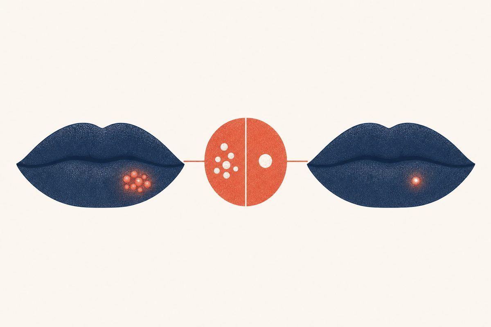

Key Takeaways
- A cold sore is a contagious viral infection, usually caused by HSV-1; a pimple is a clogged, inflamed pore, and acne is not contagious. The treatment is different for each.[2][9][14]
- The clearest early clue is the warning stage: a day or two before a cold sore appears, the spot may tingle, itch or burn. A pimple instead shows up as a red bump that may contain white or yellow pus.[11][10]
- Cold sores form small fluid-filled blisters that may grow together, break open, leak and then crust; a pimple is a red bump, sometimes with a white or yellow center.[9][10]
- For many people a cold sore goes away without treatment in 7 to 14 days, and outbreaks can come back because the virus stays in nerve cells.[6][5]
- Popping or squeezing a pimple can push its contents deeper and lead to scarring, and a cold sore's blister and fluid are contagious, so leave both alone.[14][13]
- A clinician can often tell a cold sore by looking at it. While a spot might be a cold sore, avoiding oral contact and shared items that touch saliva is a sensible precaution.[6][5]

Different Causes
The single most important difference between a cold sore and a pimple is the cause, which drives everything else.
A cold sore is usually caused by herpes simplex virus type 1 (HSV-1), which most people pick up in childhood. Once you have the virus, you have it for life: after the first infection it becomes dormant in nerve tissue in the face and can later reactivate, which is why cold sores come back.[5][12][9]
A pimple is not an infection in the same sense. Acne starts when pores become clogged with a mixture of oil and skin cells; if bacteria become trapped in that plug, the body's immune reaction causes a pimple.[10] Acne is not contagious.[14]
This difference has a direct practical consequence: a cold sore can spread to other people through contact with sores or saliva, and less commonly HSV-1 reaches the genitals through oral-genital contact, while acne cannot be passed to someone else.[5][14]
How They Look Different
Both can appear as a red bump at the edge of the lip, which is the heart of the confusion. Look more closely and the differences are clear.
- Cold sore: small blisters filled with clear yellowish fluid appear, usually on the lips or around the mouth, and several small blisters may grow together. Within about 48 hours of the warning symptoms they usually break open, leak fluid and then crust over, turning yellow and crusty as they heal.[9][11]
- Pimple: is a red, inflamed bump over a plugged pore. If the top of the plug is white it is called a whitehead, and a pustule is a small red bump containing white or yellow pus.[10]
Grouped blisters that later break open, leak and crust are the classic picture of a cold sore, and the diagnosis is mainly made from this appearance.[2]
How They Feel Different
The sensations also differ, and this is often the earliest clue a patient can use.
A cold sore often announces itself with warning symptoms: tingling, itching, burning, stinging or throbbing at the spot a day or two before anything is visible.[11] Antiviral pills work best when taken at these warning signs, before any blisters develop.[9] Once visible, the blisters are often painful.[11]
A pimple develops as a red, inflamed bump when the body reacts to a plugged pore.[10] The acne sources reviewed for this guide do not describe a warning tingle before a pimple.
If you felt a tingle before the bump appeared, treat it as a strong hint of a cold sore rather than proof, because some people who have these warning symptoms never get a cold sore.[11] It is also the best time to start treatment: in two randomized, placebo-controlled trials, a one-day course of valacyclovir started at the first symptoms shortened the median episode by about a day.[8]
| Sensation | Cold sore | Pimple |
|---|---|---|
| Before it appears | Tingling, itching, or burning[11] | A red bump forms as a plugged pore becomes inflamed[10] |
| Once visible | Painful, fluid-filled blisters[11] | Red bump, may contain white or yellow pus[10] |
| Course | Blisters break open, leak, then crust[11] | Acne may flare up from time to time[10] |
Contagious or Not
This is the most consequential difference. A cold sore is contagious, and its blister and fluid are contagious.[13] Herpes viruses spread most easily when a sore is present, but HSV-1 can also spread from skin around the mouth that looks normal.[9][5] It passes through contact with sores or saliva, for example from a kiss or a shared fork or spoon, and less commonly reaches the genitals through oral sex.[12][5]
A pimple is not contagious: acne isn't passed from person to person. Squeezing a pimple can push pus, dead skin cells or bacteria deeper into your own skin and lead to more noticeable acne and sometimes scarring.[14]
The World Health Organization advises people with symptoms of oral herpes to avoid oral contact with others, including oral sex, and to avoid sharing objects that touched saliva.[5] If you are unsure whether a lip bump is a cold sore, following that advice until the question is settled is a small precaution. It matters more around people with weakened immune systems, in whom herpes can cause more severe symptoms.[5]
How Long Each Lasts
The timelines can help in hindsight. For many people, a cold sore goes away without treatment in 7 to 14 days.[6] The sources reviewed here give no fixed timeline for a single pimple, and acne itself may flare up from time to time.[10]
There is also the question of recurrence. Because HSV-1 stays in nerve cells and can reactivate, cold sores come back, and listed triggers include stress, illness such as a cold, fever or flu, and strong sunlight.[5][12] Pimples are not caused by a persistent virus, though acne may flare up from time to time.[10]
Side-by-Side Comparison
| Feature | Cold sore | Pimple |
|---|---|---|
| Cause | HSV-1 virus[9] | Clogged, inflamed pore[10] |
| Early warning | Tingling, itching or burning[11] | A red bump appears[10] |
| Appearance | Fluid-filled blisters, then crust[9] | Red bump, maybe a white or yellow center[10] |
| Contagious | Yes[2] | No[14] |
| Duration | Often 7 to 14 days untreated[6] | Varies; acne can flare[10] |
| Comes back | Yes, the virus can reactivate[5] | Acne can flare, not from a virus[10] |
| Treatment | Antiviral drugs[3] | Acne care[10] |
Why the Treatment Differs
Because the causes are different, the treatments are different.
A cold sore is treated with antiviral medicine, because a virus causes it.[6] For an outbreak, oral antivirals such as acyclovir, valacyclovir and famciclovir work better than antiviral creams, and treatment should start promptly, ideally during the warning stage and no later than 48 hours after the sores appear.[2] Even then the benefit is modest: a review of randomized trials found that prompt treatment, with a cream or with pills, has a small favourable effect on how long symptoms last.[1] Antiviral creams often shorten an outbreak by only a few hours to a day.[9]
A pimple is treated with acne care: cleaning the skin gently with a mild, nondrying soap and using over-the-counter products that may contain benzoyl peroxide or salicylic acid, with stronger prescription medicines if pimples are still a problem.[10]
One rule applies to both: leave it alone. Popping or squeezing a pimple can push pus, dead skin cells or bacteria deeper into the skin and lead to more noticeable acne and sometimes scarring.[14] A cold sore's blister and fluid are contagious, and dermatologists suggest dabbing any cold sore medicine on with a clean cotton-tipped swab because the virus spreads easily.[13][6]
| Approach | For a cold sore | For a pimple |
|---|---|---|
| First-line | Antiviral medication, started early[2] | Gentle cleansing, benzoyl peroxide or salicylic acid[10] |
| Prescription options | Antiviral pills such as acyclovir or valacyclovir[3] | Stronger prescription acne medicines[10] |
| Avoid | Touching the sore, sharing cups or towels[13] | Popping or squeezing, which can scar[14] |
| When to see a clinician | Sores near the eye, frequent outbreaks, or symptoms lasting over 2 weeks[9] | Deep or painful acne, or scarring[14][10] |
When You're Not Sure
There will be times when the distinction is genuinely uncertain, especially early on. In that case, a few principles help.
First, be cautious about contagion. While a spot might be a cold sore, avoid oral contact, including kissing and oral sex, and avoid sharing items that touch saliva, as advised for people with oral herpes symptoms.[5] Second, if the spot tingled before appearing, that is when antiviral pills work best, and treatment should start no later than 48 hours after sores appear.[9][2] Third, a clinician can often tell a cold sore by looking at it, and the diagnosis is often straightforward.[6][4] A video visit is one way to have the spot looked at.
Also remember that HSV-1 does not always look typical: it can occasionally appear as a single sore, even in people with healthy immune systems.[7] Other problems can also cause a sore or bump near the lip, so a sore that has not cleared after 2 weeks, or one near the eye, should be checked.[9]
Frequently Asked Questions
Acne products are not a cold sore treatment. Because a virus causes cold sores, they are treated with antiviral medicines.[6]
References
- Opstelten W, Neven AK, Eekhof J. Treatment and prevention of herpes labialis. Canadian Family Physician. 2008;54(12):1683-1687. Review. PMID 19074705
- Leung AKC, Barankin B. Herpes labialis: an update. Recent Patents on Inflammation & Allergy Drug Discovery. 2017;11(2):107-113. Review. PMID 28971780
- Woo SB, Challacombe SJ. Management of recurrent oral herpes simplex infections. Oral Surgery, Oral Medicine, Oral Pathology, Oral Radiology, and Endodontology. 2007;103 Suppl:S12.e1-18. Review. PMID 17379150
- Cernik C, Gallina K, Brodell RT. The treatment of herpes simplex infections: an evidence-based review. Archives of Internal Medicine. 2008;168(11):1137-1144. Review. PMID 18541820
- World Health Organization. Herpes simplex virus (fact sheet). 30 May 2025. Accessed November 7, 2026. who.int herpes simplex virus fact sheet
- American Academy of Dermatology. Cold sores: Diagnosis and treatment. Last updated February 1, 2024. Accessed November 7, 2026. aad.org cold sores treatment
- de Paiva JPG, Sousa-Neto SS, Humberto MAC, et al. Unusual oral presentations of herpes simplex virus-1: a series of eight cases and literature review. Special Care in Dentistry. 2025;45(6):e70129. Case series and literature review. PMID 41414046
- Spruance SL, Jones TM, Blatter MM, et al. High-dose, short-duration, early valacyclovir therapy for episodic treatment of cold sores: results of two randomized, placebo-controlled, multicenter studies. Antimicrobial Agents and Chemotherapy. 2003;47(3):1072-1080. Randomized controlled trials. PMID 12604544
- MedlinePlus Medical Encyclopedia. Herpes - oral. U.S. National Library of Medicine. Reviewed July 3, 2025. Accessed November 7, 2026. medlineplus.gov oral herpes
- MedlinePlus Medical Encyclopedia. Acne. U.S. National Library of Medicine. Reviewed August 2, 2025. Accessed November 7, 2026. medlineplus.gov acne
- American Academy of Dermatology. Cold sores: Signs and symptoms. Accessed November 7, 2026. aad.org cold sores symptoms
- American Academy of Dermatology. Cold sores: Who gets and causes. Accessed November 7, 2026. aad.org cold sores causes
- American Academy of Dermatology. Cold sore remedies dermatologists recommend. Last updated February 1, 2024. Accessed November 7, 2026. aad.org cold sore remedies
- American Academy of Dermatology. 10 skin care habits that can worsen acne. Accessed November 7, 2026. aad.org acne skin care habits
- American Academy of Dermatology. Acne: Who gets and causes. Accessed November 7, 2026. aad.org acne causes